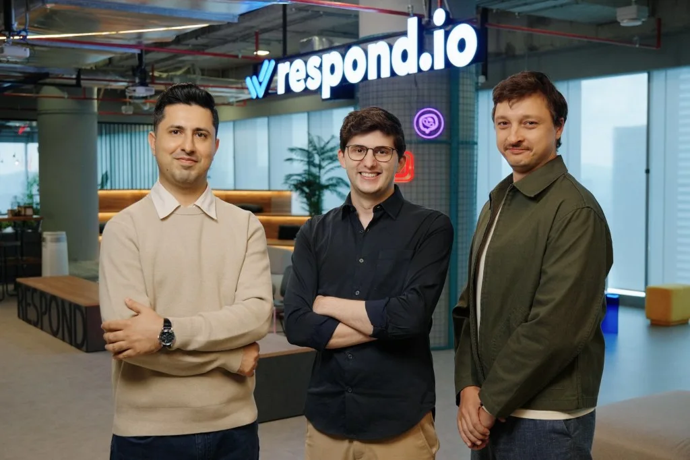

Проблема, которую Respond.io начал решать в 2017 году, проста: компании не успевали отвечать клиентам, перешедшим в мессенджеры. Сегодня стартап, основанный в Гонконге и переместивший штаб-квартиру в Куала-Лумпур, стал заметным игроком в сфере управления диалогами. Закрытый раунд Series B на $62,5 млн возглавил Camber Partners, соинвесторами выступили Endeavor Catalyst и прежние инвесторы (предыдущий раунд на $7 млн был в 2022 году).
Платформа ориентирована на B2C-компании среднего и крупного размера (от 200 до 10 000 сотрудников) в сферах здравоохранения, автомобильного бизнеса, ритейла, образования и туризма. Respond.io объединяет каналы WhatsApp, Instagram, TikTok, Messenger, Line, Telegram, WeChat, голосовые звонки и веб-чат. Ключевое отличие — встроенные ИИ-агенты, которые автоматически обрабатывают запросы, квалифицируют лиды и закрывают сделки без участия человека. CEO Gerardo Salandra так описывает подход: «Вы не заходите на сайт автомобильного дилера, не вводите номер карты и не покупаете машину — вы общаетесь с консультантом, задаёте много вопросов».
| Показатель | Значение |
|---|---|
| Объём раунда | $62,5 млн |
| Годовая выручка (ARR) | $35 млн |
| Рост ARR год к году | 169% |
| Маржа прибыли | 30% |
| Объём обрабатываемых сообщений | 2 млрд/квартал |
Бизнес-модель Respond.io строится на тарификации по объёму диалогов, а не по числу сотрудников, как у традиционных корпоративных систем. Когда компания использует ИИ для замены людей, конкуренты теряют доход — Respond.io, напротив, получает больше. «Чем меньше людей использует ваш продукт, тем меньше они платят, — объясняет Салаандра. — Мы не так выставляем счета». Это даёт преимущество перед старыми платформами, которые «прикрутили» мессенджеры к электронной почте и звонкам как второстепенную функцию.
Раунд Series B на $62,5 млн возглавил Camber Partners при участии Endeavor Catalyst и существующих инвесторов.

Масштаб данных создаёт эффект «маховика»: больше сообщений — лучше ИИ, лучше ИИ — больше клиентов, больше клиентов — больше сообщений. Компания перерабатывает 2 млрд сообщений в квартал, что даёт существенную фору новым участникам. «Каждый день, когда ИИ становится заметнее, мы растем быстрее», — утверждает CEO.
Географически выручка распределена равномерно: 30% из Азиатско-Тихоокеанского региона, 30% из Латинской Америки, 20% с Ближнего Востока и Африки, и только 20% из Северной Америки и Западной Европы. Однако, по словам Салаандры, западные регионы — самые быстрорастущие: «Переход на мессенджеры занял у них больше времени, но теперь он идёт очень быстро». Ожидается, что в течение двух-трёх лет эти регионы станут крупнейшим сегментом компании.
На полученные средства Respond.io планирует нанимать персонал, расти органически и совершать приобретения. Уже ведутся переговоры о нескольких потенциальных сделках: цель — либо «болт-он» технологии, которая встраивается в экосистему, либо устоявшиеся команды с клиентской базой в стратегических регионах. «Представьте, сколько месяцев я сэкономлю, если найду компанию, у которой уже есть клиенты и команда, — говорит CEO. — Я могу сэкономить от шести месяцев до года за счёт приобретения». Несмотря на свежий капитал, Салаандра настроен сдержанно: «Мы не хотим быть компанией типа „рост любой ценой“. Даже с этими деньгами мы будем очень дисциплинированными». В долгосрочной перспективе он смотрит на IPO на NASDAQ как на «любимый вариант».